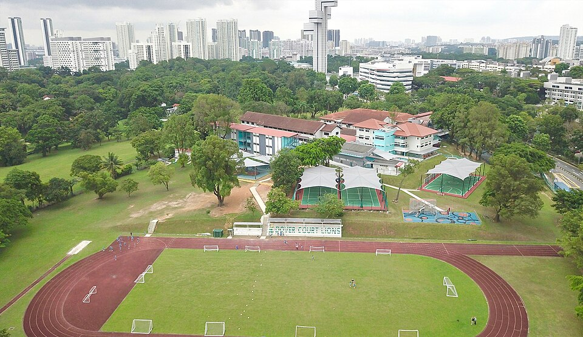

도버코트 인터내셔널 스쿨(싱가포르 도버로드) 캠퍼스 · 사진: International-schools.org / Wikimedia Commons, CC BY-SA 4.0
도버코트 인터내셔널 스쿨(Dover Court International School) — 싱가포르, 모든 아이가 같은 길로 가지 않는 학교
1. 어떤 학교인가
· 설립 — 1972년에 세워진 것으로 알려져 있습니다. 싱가포르에서 오래된 국제학교에 속합니다.
· 캠퍼스 — 싱가포르 중부 도버로드(Dover Road), 이른바 도버 교육지구 안에 있습니다. 한 캠퍼스에 만 3세부터 18세까지가 함께 있는 것으로 안내됩니다.
· 계열 — 2014년 4월부터 노드앵글리아(Nord Anglia Education) 그룹에 속한 것으로 알려져 있습니다.
· 교육과정 — 영국 국가교육과정을 바탕으로 Early Years → Key Stage 1·2 → 중등으로 이어지고, 중등 구간에서 IGCSE를 치르는 것으로 안내됩니다.
· 식스폼(마지막 2년) — IB 디플로마와 함께 BTEC 과정이 안내됩니다.
· 학습 지원 — 심리·언어·물리치료 전문가와 특수교육 자격 교사가 속한 학습 지원 부서를 학교 안에 두고 운영하는 것으로 소개됩니다.
· 영어 지원 — EAL 프로그램이 별도로 안내됩니다.
※ 학비·정원·재학생 수·합격률·시험 성적처럼 해마다 바뀌는 수치는 이 글에서 다루지 않습니다. 개설 과정과 지원 범위도 연도에 따라 안내가 달라질 수 있으니 올해 요강을 학교에 직접 확인하세요.
2. 핵심 ① — 마지막 2년의 길이 하나가 아닙니다
영국식 학교라고 하면 보통 A-Level을 떠올리십니다. 그런데 이 학교의 식스폼은 IB 디플로마와 BTEC 두 가지로 안내됩니다. 한국 학부모님께 가장 낯선 단어는 BTEC일 텐데, 간단히 정리하면 이렇습니다.
| 확인할 것 | IB 디플로마(DP) | BTEC |
|---|---|---|
| 점수가 나오는 방식 | 최종 외부 시험 비중이 크다 | 과제·단위를 쌓아 이수한다 |
| 다루는 폭 | 여섯 영역을 고르게 | 한 분야를 깊게(예: 비즈니스) |
| 힘든 지점 | 기한이 몰린다 · 시험 주간 부담 | 2년 내내 과제를 꾸준히 내야 한다 |
| 맞는 아이 | 폭넓게 가져가며 시험에 강한 편 | 긴 시험보다 꾸준한 산출물에 강한 편 |
| 반드시 확인할 것 | 지원할 대학·국가가 그 자격을 어떻게 인정하는가 — 나라와 대학마다 다릅니다 | |
※ 위 표는 두 과정의 평가 방식 차이를 구조로만 비교한 것입니다. 개설 단위와 과목은 연도에 따라 바뀔 수 있으니 반드시 그해 요강을 확인하세요.
오해를 하나 풀고 가겠습니다. BTEC은 덜 하는 길이 아닙니다. 시험 한 번에 몰아치지 않는 대신 2년 내내 과제를 꾸준히 내야 합니다. 마감을 자주 놓치는 아이에게는 오히려 더 고됩니다. 그리고 가장 중요한 것 — 대학 지원에서의 인정 범위는 나라와 대학마다 다릅니다. "BTEC이면 어디든 갈 수 있다"거나 반대로 "BTEC은 대학이 안 받는다"는 말 모두 정확하지 않습니다. 아이가 목표로 하는 나라의 대학 요강을 학교 진학 카운슬러와 함께 확인하셔야 합니다.
3. 핵심 ② — 학습 지원을 학교 안에 두었습니다
이 학교를 싱가포르의 다른 학교와 가르는 두 번째 지점입니다. 학습 지원 부서를 학교 안에 두고, 심리·언어·물리치료 전문가와 특수교육 자격을 갖춘 교사가 함께 일하는 구조로 안내됩니다.
그런데 여기서 한국 가정이 가장 많이 오해하시는 부분이 있습니다. "학습 지원이 있으니 우리 아이 영어도 봐 주겠지"라고 생각하시는 것입니다. 정확하지 않습니다.
· EAL — 영어가 모국어가 아닌 학생의 언어를 돕는 프로그램입니다. 한국에서 막 오신 가정은 보통 여기부터 검토됩니다.
· 학습 지원 — 언어와 별개로 학습 자체에 지원이 필요한 경우를 위한 절차입니다. 많은 학교의 정책에서 "모국어가 영어가 아니라는 이유만으로는 학습 지원 대상이 아니다"라고 명시합니다.
이 구분을 모르고 오시면 첫 학기에 실망하십니다. 그러니 상담에서 물으실 것은 셋입니다. "우리 아이는 어느 쪽을 받게 되는가", "EAL은 몇 학년까지 제공되는가", "학습 지원으로 넘어가려면 무엇이 필요한가". 두 제도의 차이는 Learning Support 안내와 EAL 안내에 자세히 정리해 두었습니다.
4. 핵심 ③ — 싱가포르에서 이 학교를 고르는 기준
싱가포르는 선택지가 많은 도시입니다. 그래서 오히려 기준을 못 세우는 일이 잦습니다. 이 학교가 답이 되는 경우와 아닌 경우를 솔직하게 적겠습니다.
· 답이 되는 경우 — 아이가 속도보다 자리 잡는 시간이 필요할 때, 마지막 2년에 시험 한 번으로 끝내는 방식이 잘 안 맞을 것 같을 때, 한 캠퍼스에서 형제가 같이 다니기를 원할 때.
· 다시 생각해 보실 경우 — 특정 과목을 아주 깊게(예: 여러 개의 고난도 이과 과목) 가져가야 하는 상위권 아이라면, 그 과목이 실제로 개설되는지부터 확인하셔야 합니다. 이건 학교 규모와 무관하게 매년 달라지는 부분입니다.
또 하나, 위치입니다. 도버로드는 싱가포르 중부 교육지구 안이라 대중교통 접근이 나쁘지 않습니다. 다만 싱가포르에서는 어느 학교든 통학 버스 노선이 집을 정하는 실질 기준이 되므로, 관심 있는 동네를 먼저 정한 뒤 그 동네에 노선이 오는지를 물으시는 편이 빠릅니다. → 오픈데이·학교 방문 준비법
5. 한국(주재원) 학생·학부모가 겪는 어려움
· 영어 쓰는 나라라 안심하다가 늦게 발견합니다. 싱가포르는 영어를 널리 쓰기 때문에 생활 영어가 빨리 늡니다. 그런데 점수는 교과를 읽고 설명하는 영어에서 갈려서, 회화가 되는데 점수가 안 나오는 상태가 이어집니다. → EAL · 리딩 레벨 읽는 법
· Year와 Key Stage가 낯섭니다. 학년 이름이 Year로 바뀌고 그 위에 Key Stage라는 묶음이 또 있어 아이를 몇 학년에 넣는지부터 헷갈립니다. → 학년 체계 총정리
· 과목 선택이 한국보다 이릅니다. IGCSE 구간에서 과목을 고르고 줄이는 판단이 옵니다. → IGCSE 과목 선택
· 지원 제도를 말하기 어려워하십니다. 학습 지원이나 EAL을 요청하면 아이가 낙인 찍힐까 걱정하시는데, 국제학교에서는 학교가 먼저 묻는 일상적인 절차에 가깝습니다. → Learning Support
· 수학은 용어와 서술에서 막힙니다. 이미 아는 단원인데 알지브라·지오메트리 용어가 영어라 손을 못 댑니다. 답만 적으면 과정 점수를 받지 못합니다. → 알지브라 공부법
6. 그래서 이렇게 준비합니다
🧭 먼저 — 들어가는 학년과 그때의 구간을 적는다
종이에 두 줄만 적어 보세요. "우리 아이는 몇 월에, 어느 Year로 들어가는가." 그리고 "그때 이 학교에서 그 학년은 어느 구간(초등 / IGCSE / 식스폼)인가." 특히 IGCSE는 2년 코스라서 중간에 합류하면 이미 정해진 과목을 따라가야 합니다. 합류 가능 여부를 먼저 물으셔야 합니다.
📖 영어과외 — 회화 말고 교과 영어부터
논픽션 지문을 읽는 속도, analyze·evaluate·justify 같은 지시어의 뜻, 문단의 구조 — 이 세 가지가 점수를 정합니다. IGCSE 구간에서는 여기에 답안의 형식이 하나 더 붙습니다. (영어 공부법 참고)
📐 수학과외 — 용어를 붙이고, 과정을 문장으로
아이가 이미 아는 개념에 영어 용어를 다시 붙이는 작업부터 합니다. 그다음 풀이 과정을 영어 문장으로 적는 습관을 들입니다. IGCSE와 IB 모두 과정을 보여 주지 않으면 점수를 다 받지 못합니다.
📅 학교를 방문하신다면
물을 것은 셋입니다. "우리 아이 학년에 자리가 있는가", "EAL과 학습 지원 중 어느 쪽으로 배정되며 기간은 어떻게 되는가", "식스폼에서 IB와 BTEC 중 무엇을 언제까지 정하는가".
7. 싱가포르의 강점 — 시차 한 시간의 화상과외
싱가포르는 한국보다 한 시간 느립니다. 싱가포르 오후 4시가 한국 오후 5시라, 아이가 학교에서 돌아온 직후 시간이 한국 강사진의 수업 시간과 그대로 맞습니다. 게다가 인터넷 환경이 안정적이어서 화상수업이 끊기는 일이 드뭅니다. 수업은 아이의 실제 과제와 학교가 준 채점 기준을 화면에 놓고 "어느 항목에서 깎였는지"부터 보는 방식이 가장 빠릅니다.
정리
도버코트 인터내셔널 스쿨은 1972년 설립으로 알려졌고 2014년부터 노드앵글리아 그룹에 속한 싱가포르 도버로드의 영국식 학교입니다. 다른 학교와 다른 점은 둘입니다. 마지막 2년의 길이 IB 디플로마와 BTEC 둘이라는 것, 그리고 학습 지원 부서를 학교 안에 두었다는 것입니다. 싱가포르에서 "우리 아이가 큰 학교 속도를 못 따라갈 것 같다"는 걱정을 하고 계셨다면, 이 학교는 한 번 놓고 보실 만합니다. 30분 무료 상담으로 아이에게 맞는 구간부터 함께 짚어 보세요.